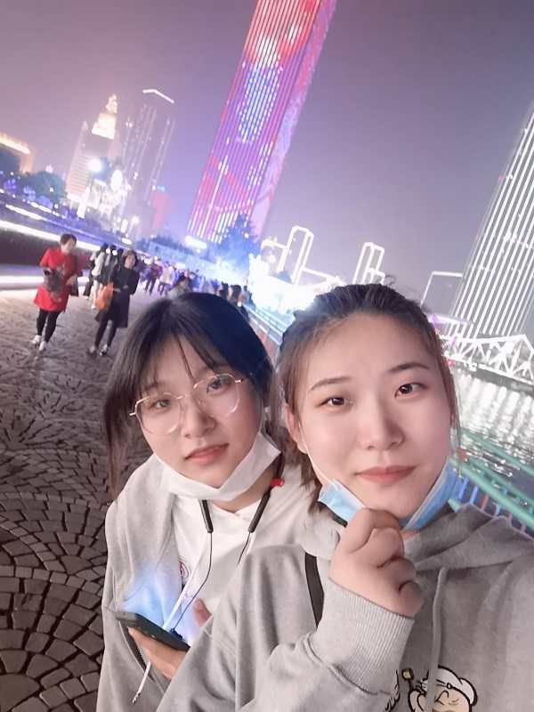
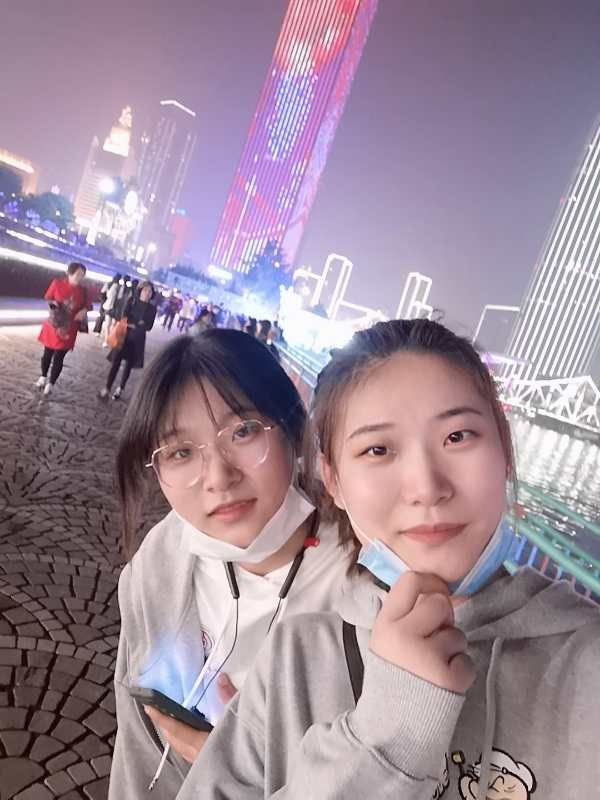

女排精神
提起“女排精神”，就如郎平所说:不是胜利就有女排精神，输了就没了，它是恒久存在的。“女排精神”是一种力量，一种不服输的劲头，一种默默付出顽强到底的精神，是我们中国精神的一个缩影。 不管是比分落后，还是稍稍领先，或者不相上下，我们的女排姑娘们都体现出每球必争的决心，诠释出无私奉献、自强不息的“女排精神”“拼搏精神永远是中国竞技体育之魂”

夺冠
月13日，东京奥运女排分组出炉，中国女排与美国、意大利、俄罗斯、土耳其和阿根廷同在一组。对于进入“死亡之组”，网友纷纷给中国女排打气：真正的强者敢于直面强劲的对手。而1月19日， 《夺冠》(原名《中国女排》)电影举行全球首映礼，现役女排队员真容“搬”上大银幕，两个字，就是“超燃”。 《夺冠》大年初一登陆各大院线，中国女排7月将出征2020京东奥运会。“中国女排热”在这个春节，扑面而来。为中国女排加油正成为一股热潮，在今年沸腾不止。 在《夺冠》电影还没有登陆银幕之前，央视的一则女排广告“大片”面向全国14亿人民播出，提前为“中国女排热”添了一把火。


观后感
从世界杯冠军到世锦赛，再从奥运会到亚锦赛，女排姑娘们的运动员们用自己的努力和实力证实了我们顽强拼搏、奋勇前进的精神。在诸多采访中，令我不禁泪目的就是郎平指导那一句 ：“只要穿上带有中国国旗的衣服参加比赛，我们的目标就是升国旗、奏国歌。”升国旗、奏国歌，这不是简简单单的行为，这是在向世界证实我们中国的实力，女排姑娘们不以自己夺冠作为目标， 不以夺冠为利益，升国旗、奏国歌，女排的运动员们这是把国家同自己相连。这是女排精神，一切以国家为重。
冰上王者

羽生结弦是日本花样滑冰单人滑选手，也是我最喜欢的花滑选手，十分期待2022北京冬奥会能够在现场观赏他的比赛。 羽生结弦语录 ●努力会说谎，但努力不会白费。 ●我并不讨厌逆境，我坚信越过它看到的景色会更美好。 ●我想赢，这是我的动力来源。不管怎么郁闷纠结或者找借口，结果都不会改变。新的敌人是自己。 ●明明能做到的事情等到失败了才说可惜，那不是很无聊吗?那就应该是没有用尽全力去做，不管怎样的情况都全力以赴，这就是作为花滑选手的我。 ●不要让“有时间”使拖拉变得理所应当。要有紧迫感，要学会珍惜时间，珍惜自己的机会。 ●过去的自己就是为了被超越存在的。 ●正因为有弱小的地方，人才能变得更强大；正因为有弱小的地方，才会为了告别这些弱小而拼命努力训练。 ●我就是个挑战者，要从一开始重新起步，凭自己的力量，哪怕用指尖抠着障壁也要爬上去。 ●想要如果明天的自己看到今天的自己也可以抬头挺胸，像现在这样持续下去。 ●做不到的话，就做到能做到为止；做到后，就继续做到完美为止；做到完美之后，就继续做到无论做几次都能完美为止。 ●以优胜作为起点，也要以优胜作为终点。 ●能找到（心中的）答案的，只有自己。从今以后必须在自己的心里创造战斗。某种程度上，是孤独的。 ●置身于更严酷的环境，接受试炼才能成长。 ●十代结弦，一生悬命。
羽生结弦--羽你冰上共舞，啊啊啊，我太爱羽生结弦了
美人不是母胎生， 应是桃花树长成， 已恨桃花容易落， 落花比汝尚多情。 静时修止动修观， 历历情人挂目前， 若将此心以学道， 即生成佛有何难? 结尽同心缔尽缘， 此生虽短意缠绵， 与卿再世相逢日， 玉树临风一少年。 不观生灭与无常， 但逐轮回向死亡， 绝顶聪明矜世智， 叹他于此总茫茫。 山头野马性难驯， 机陷犹堪制彼身， 自叹神通空具足， 不能调伏枕边人。 欲倚绿窗伴卿卿， 颇悔今生误道行。 有心持钵丛林去， 又负美人一片情。 静坐修观法眼开， 祈求三宝降灵台， 观中诸圣何曾见? 不请情人却自来。 入山投谒得道僧， 求教上师说因明。 争奈相思无拘检， 意马心猿到卿卿。 曾虑多情损梵行， 入山又恐别倾城， 世间安得双全法， 不负如来不负卿。 记得早先少年时,大家诚诚恳恳,说一句 是一句;清早上火车站,长街黑暗无行人,卖豆浆的小店冒着热气。从前的日色变得慢,车，马，邮件都慢,一生只够爱一个人;从前的锁也好看,钥匙精美有样子,你锁了 人家就懂了. 当你老了，头白了，睡意昏沉，炉火旁打盹，请取下这部诗歌，慢慢读，回想你过去眼神的柔和，回想它们昔日浓重的阴影；多少人爱你青春欢畅的时辰，爱慕你的美丽，假意或真心，只有一个人爱你那朝圣者的灵魂，爱你衰老了的脸上痛苦的皱纹；垂下头来，在红光闪耀的炉子旁，凄然地轻轻诉说那爱情的消逝，在头顶的山上它缓缓踱着步子，在一群星星中间隐藏着脸庞。